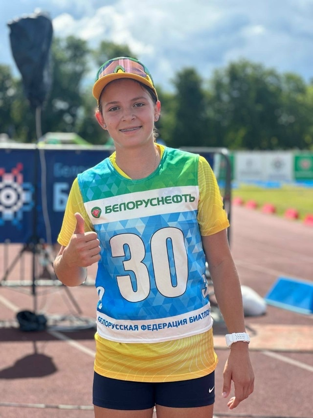

Арина Ходоренко — юная биатлонистка из Жлобина, одна из самых перспективных в Беларуси спортсменок своего возраста (2012 года рождения). Её основные достижения уже сейчас включают победу на международных стартах и медали Кубка Белорусской федерации биатлона.
Арина родилась в 2012 году и живёт в Жлобине, учится в гимназии № 8 имени В.И. Козлова. Занимается в Центре олимпийского резерва Жлобина, где сильная лыжнобиатлонная школа. В спорт она попала неожиданно: сначала хотела записаться на футбол, но по совету маминой подруги пошла в биатлон. С того момента тренируется практически каждый день и уже в 12 лет открыто говорила, что задумывается о профессиональной спортивной карьере. Равняться она советовала на сильнейших — в частности, мечтала выступить на стартах на призы олимпийской чемпионки Динары Смольской.
Тренеры и организаторы отмечают упорство Арины: она тренируется почти ежедневно и не боится соперничать со спортсменками из разных областей Беларуси и даже из России. Сама она на победы отвечает благодарностью тренерам, признаваясь, что без их труда и времени результатов бы не было.
← Вернуться к карте